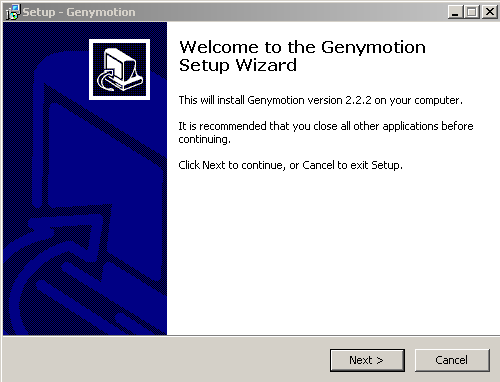
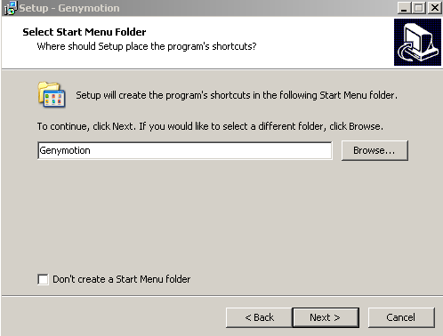
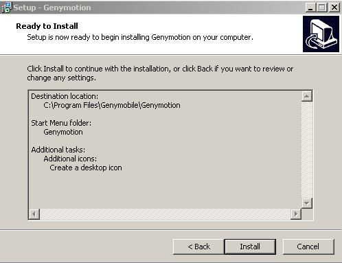
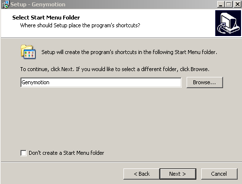
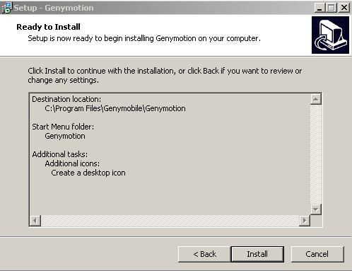
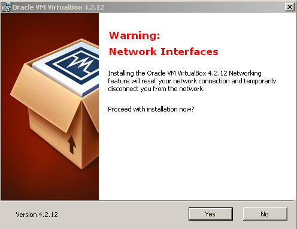
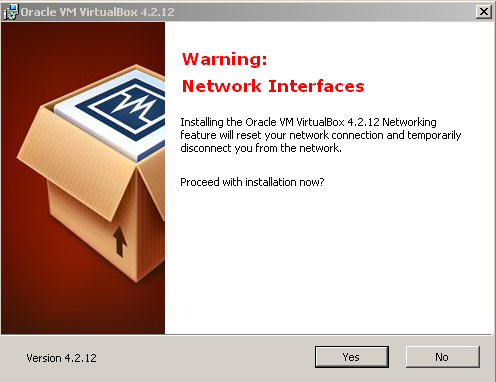

Objectives
We will then install and set up effective tools for Android application development. This will include a specially equipped version of Eclipse + an emulator. The emulator we are using - Genymotion - is a third party application not strictly part of the android build tools. However it is considerably faster and more useful than the standard emulator provided with the Android SDK.
Android SDK
This step describes how to download and install
-
Android Software Development Kit (SDK)
-
Download the latest Android SDK for an existing IDE and save to a temporary folder.
- Do not download the Eclipse ADT with Android SDK. See Figure 1 and Figure 2.
-
In the case of OSX (Mac) expand the Android SDK to a suitable location.
- In the case of Windows double click on the downloaded installer, for example see Figure 3:
- Then proceed through the various steps in the wizard such as those illustrated in Figures 4 to 9 inclusive.
- Untick the check box Start SDK Manager see Figure 8. We shall deal with this later during Eclipse configuration.
Eclipse IDE
This step describes how to download and install
- Eclipse Integrated Development Enviromnent (IDE)
- Android plugin
- This will allow the Android SDK to be used within the IDE
- Genymotion emulator plugin
- This will substitute for an actual mobile device during development
Download Eclipse Luna
- Download Eclipse Luna IDE, ensuring you chose the correct version for your operating system and save to a temporary folder. See Figure 1.
- Expand the downloaded archive to a suitable location.
- In Windows this could be at the root of your primary drive (C:\).
Install Android SDK Plugin
- Start Eclipse, then select Help > Install New Software.
- Click Add, in the top-right corner.
-
In the Add Repository dialog that appears, enter "ADT Plugin" for the Name and the following URL for the Location:
https://dl-ssl.google.com/android/eclipse/
-
Click OK.
- In the Available Software dialog, select the checkbox next to Developer Tools and click Next.
- In the next window, you'll see a list of the tools to be downloaded. Click Next.
-
Read and accept the license agreements, then click Finish.
-
If you get a security warning saying that the authenticity or validity of the software can't be established, click OK.
- When the installation completes, restart Eclipse.
Configure Android SDK Plugin
Once Eclipse restarts, you must specify the location of your Android SDK directory:
- In the "Welcome to Android Development" window that appears, select Use existing SDKs.
- Browse and select the location of the Android SDK directory you recently downloaded and unpacked.
- Click Next.
Download SDK Packages
- In Eclipse, click on the Android SDK Manager icon. See Figure 2.
-
The manager will open and be something similar to that depicted in Figure 3.
-
As a minimum when setting up the Android SDK, you should download the latest tools and Android platform:
- Open the Tools directory and select:
- Android SDK Tools
- Android SDK Platform-tools
- Android SDK Build-tools (highest version)
- Open the first Android X.X folder (the latest version) and select:
- SDK Platform
- A system image for the emulator, such as ARM EABI v7a System Image
- Open the Tools directory and select:
Emulator
This step briefly describes how to
- Download the Genymotion emulator ensuring, in the case of Windows, you select the version that includes VirtualBox.
- Install Genymotion plugin in Eclipse IDE
- This emulator will substitute for an actual mobile device during development
- Official documentation is available online on the Genymotion site.
Download Genymotion
Register an account with Genymotion.com and download the Free Genymotion emulator.

Installing on a Windows platform
The following series of screenshots is indicative of the steps in installing on a Windows platform (collectively referred to as Figure 3): 
 



 



Finally, you may be prompted to add a new virtual device as indicated in Figure 4: press the No button.

Installing on an OSX (Mac) platform
-
Download and install VirtualBox (if it is not already installed).
- A User Manual is also available on the VirtualBox download page.
-
Double click on the downloaded dmg installer file file (example genymotion-2.2.2.dmg).
- Drag the Genymotion icon (at the left in Figure 4) to the Applications folder (see Figure 5).

Genymotion Plugin
To install the Genymotion plugin in Eclipse:
- Start Eclipse, then select Help > Install New Software.
- Click Add, in the top-right corner.
-
In the Add Repository dialog that appears, enter Genymotion for the Name and the following URL for the Location:
http://plugins.genymotion.com/eclipse
-
Click OK.
- In the Available Software dialog, select the checkbox next to Developer Tools and click Next.
- In the next window, you'll see a list of the tools to be downloaded. Click Next.
-
Read and accept the license agreements, then click Finish.
-
If you get a security warning saying that the authenticity or validity of the software can't be established, click OK.
- When the installation completes, restart Eclipse.
- After Eclipse's restart, you will see a new button on the toolbar as depicted in Figure 1.
- Set path to Genymotion installation directory by opening Eclipse Preferences and selecting Genymotion as shown in Figure 2.
- In the Genymotion application text input window enter the path to the Genymotion application installation directory. This could be:
- In Windows: C:\Program Files\Genymobile\Genymotion
- In Mac OSX: /Applications/Genymotion.app
- Click Apply button and then OK
- In the Genymotion application text input window enter the path to the Genymotion application installation directory. This could be:
- Create a new Genymotion virtual device as follows:
- Click the Genymotion icon on the toolbar (see Figure 1 again) which opens the Genymotion Virtual Devices Manager.
- Click the New button on the right. This launces the Virtual device creation wizard.
- Follow the steps indicated in the wizard depicted in the series of images collectively referred to as Figure 3 below in which we have chosen a specific device from the list (Google Nexus 7).
- Click the Genymotion icon on the toolbar (see Figure 1 again) which opens the Genymotion Virtual Devices Manager.

Maps (Phone)
Connect your phone to your computer using the USB cable.
The following apply to a Samsung phone and is not to be taken as applicable to all Android devices.
When you first make a connection you may be presented with a message along the following lines, depending on the software on and the model of your phone:
Attention Unable to find software on your PC that can recognise your device. Service pack 3, Windows Media Player, version 11 or higher or USB driver for Windows or Android file transfoer for Mac OS must be installed (see www.microsoft.com or www.android.com/filetransfer)
When you open www.android.com/filetransfer on a Mac you will be presented with a screen as shown in Figure 1:

Download and install the file androidfiletransfer.dmg:

On your phone, open settings and scroll to Debugging. Tick:
- USB debugging
- Allow mock locations
Still on settings:
- Enable NFC (allow data exchange when device touches another device).
You should receive a notification:
- Connected as a media device which indicates that you may now install an application directly from your computer.
In Package Explorer in Eclipse select MyRent (or any other functioniong app of your choice) and run the menu command Run | Run:
.
The Android Device Chooser window should open, displaying the tethered android phone:
Select the device, in this case samsung-gt_s6810p-... and press OK.
- After a few moments the application should have been installed and launched on your phone.
Install Play Store
Following are instructions to install Google Play Store on the emulator.
- We are working with Google Nexus 4-4.3 API 18 - 768x1280.
Browse to Google Apps wiki.rootzwiki.
- Click on 20130813 which leads to a download link
- The file to download is
- gapps-jb-20130813-signed.zip
Start the Genymotion virtual device:
Drag the gapps zip file onto the virtual device.
- You will be asked if you wish to flash the archive onto the Genymotion device.
-
Press OK.
-
Play Services should now be installed on the virtual device.
-
Click on the Play Store icon
- Log into your Gmail account using an existing or new account.
- Locate Maps in Play Store
- Here we use a search string 'google maps engine'
- Install Maps.
Launch a map-enabled app such as MyRent and test that the map facility is now available.
- In the case of MyRent, create a new residence and enter an arbitrary geolocation, for example 52.25, - 7.19
Setup summary
Sample Android apps
Download the following apps from the local achive to a temporary folder and, in turn, drag and drop each onto the GenyMotion emulator.
- This will install the apps on the virtual device.

Launch the apps and experiment with their functionality.